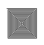

pyautogui i.e, only controls for keyboard and mouse action
- ref 1 : https://pyautogui.readthedocs.io/en/latest/#examples
- ref 2 : https://automatetheboringstuff.com/2e/chapter20/
* unity - .fbx preview screenshotter - (automation/pyautogui/practice_pyautogui_unity.py)
* blender
* image empties generator - (\my_python_scripts\create_image_empty.py)
* monkey creation - (automation/pyautogui/practice_pyautogui_blender.py)
* mspaint
* version 1 - manually open mspaint then draw the spiral<< automation/pyautogui/hello_pyautogui.py
* version 2 - open mspaint then draw the spiral << automation\mspaint_control_autogui.py